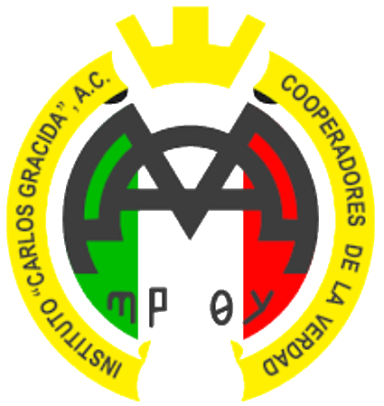

Hi, Im Carlos Sebastián Eugenio Reyes

Biomedical Engineering student passionate about technology, medical electronics, and machine learning.
🧪 Projects
Explore a selection of projects carried out in the areas of bioengineering, robotics, signal processing, and device design. Each one combines theory and practice to solve real-world problems through technology.
Exoskeleton Prototype
Skills: Python, Strength of Materials, Servo Motor Programming
Main Objective: To design and develop a prototype exoskeleton aimed at simulating human gait.
Desarrollo de código en software matemático para análisis de electrocardiógrafo con sensor AD8232
Habilidades: Filtros, Desviación estándar, Análisis comparativo
Objetivo: Desarrollar un código que permita el filtrado y análisis de una señal eléctrica del corazón según la NOM PROY-NOM-241-SSA1-20184.
Análisis de señales ECG usando Machine Learning
Habilidades: Python, Filtros, Análisis de datos
Objetivo: Filtrar y analizar señales cardíacas para comparar con señales saludables mediante ML.
Electrocardiógrafo para pacientes post-COVID 19
Habilidades: Arduino, Detección de picos, Análisis comparativo
Objetivo: Analizar posibles alteraciones eléctricas en el corazón de pacientes recuperados de COVID-19.
Desarrollo de cuadrúpedo
Habilidades: Python, Servomotores, SolidWorks
Objetivo: Simular el patrón de locomoción de un robot cuadrúpedo.
Device for the visually impaired people
Skills: SolidWorks, Arduino Nano, Diseño de PCB
Main Objective: Prototype smart glasses with IR sensors for obstacle alert to help people with myopia.
Más información: Instructables
Prototipo de impresora 3D para extrucción de un solo material
Habilidades: SolidWorks, C++, Fabricación de prototipo
Objetivo: Construir y calibrar una impresora 3D funcional de dimensiones parametrizadas.

Prototipo de impresora 3D para extrucción de varios materiales
Habilidades: SolidWorks, C++, Fabricación de prototipo, control de motores
Objetivo: Construir y calibrar una impresora 3D funcional que tenga la opción de cambiar el material que se extruye.

Clasificación de Arritmias con Redes Neuronales
Habilidades: Redes Neuronales, Espectrogramas, Evaluación de modelos
Objetivo: Clasificar señales cardíacas con CNNs entrenadas en espectrogramas con ventanas traslapadas.

Desarrollo de un método de entrenamiento para el control de una prótesis mioeléctrica para personas con amputación transradial del miembro superior derecho integrando métodos de Machine Learning
Habilidades: Procesamiento de señales, C++, Machine Learning, Diseño de prótesis
Objetivo: Desarrollar un método de entrenamiento para el control de una prótesis mioeléctrica para personas con amputación transradial.

Rehabilitation glove for post-stroke patients
Habilidades: Python, Análisis de movimiento, Servomotores, Análisis de señales
Objective: Desarrollar un guante de rehabilitación para ejercicios de flexo-extensión en pacientes con secuelas de EVC.
Development of a prototype of glasses integrating Machine Learning methods for people with Macular Degeneration
Skills Python, Signal analysis, Image processing, Proximity sensors
Main Objective: Develop a prototype of smart glasses with object recognition technology based on YOLOv8 to enhance the independence of individuals with macular degeneration. These glasses will identify objects in real time and notify the user, optimizing navigation and interaction with the environment through a parameterized database of common objects.
Skills
- Languages: Python, C, C++, Matlab
- Tools: Arduino, ESP32, MAX 10 FPGA, Xiao, Raspberry Pi, SolidWorks
- Areas: Machine Learning, Biomedical Signal Processing
- Other skills: Database management, PCB and circuit building, prototyping, 3D CAD design, teamwork, leadership, adaptability, and time management
Languages
-
 Spanish: Native
Spanish: Native
-
 English: B1
English: B1 -
 French: A2
French: A2
Education

Biomedical Engineering |

Basic Education |
Contact
If you want to learn more about my projects, experience, or research lines, feel free to write me an email or visit my social networks below.
|
Linktree: Sebas_Eugenio |
Email: sebaseugenio@outlook.com |